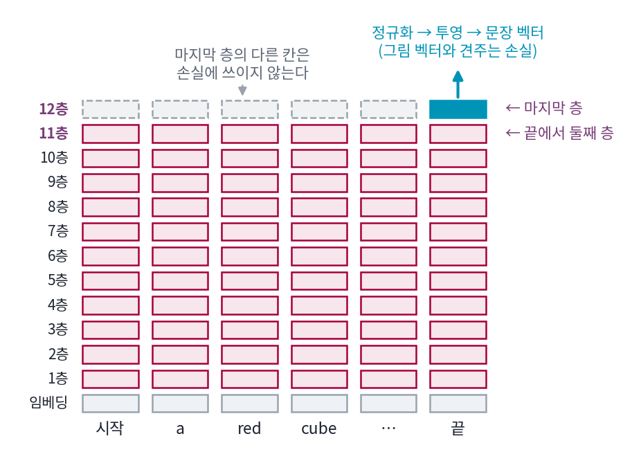

글을 읽는 인코더: CLIP의 마지막 층에서 언어모델의 여러 층으로
끝에서 둘째 층: 마지막 층을 한 칸 건너뛰는 까닭
Stable Diffusion 1.x 는 CLIP 글 인코더의 마지막 층을 토큰 77개 자리 모두 받았다. 그 뒤에 나온 모델들의 설정을 열어 보면 이상한 점이 있다. Stable Diffusion 2 는 더 큰 CLIP 글 인코더(OpenCLIP ViT-H, 24층)로 바꾸면서 마지막 층이 아니라 그 바로 앞, 23번째 층의 출력을 쓴다. SDXL 도 CLIP 글 인코더 둘의 바로 앞 층을 쓴다. 이미지 생성 도구에는 아예 「clip skip」이라는 손잡이가 있어서, 사용자가 마지막 층을 몇 칸 건너뛸지 고른다. 학습이 가장 많이 된 마지막 층을 두고 왜 한 칸 앞을 쓸까?
역사: 손잡이가 먼저 퍼졌다
이 선택을 처음 널리 알린 것은 논문이 아니라 회사 블로그였다. 그림 생성 서비스 NovelAI 는 2022년 10월에 Stable Diffusion 을 고쳐 쓴 경험을 적으면서, CLIP 글 인코더의 마지막 층 대신 끝에서 둘째 층의 출력을 썼다고 밝혔다. 지금 사용자 도구에 있는 「마지막 층을 몇 칸 건너뛸까」라는 설정이 이 선택을 고르는 손잡이다. 왜 그 층이 나았는지에 대해 블로그가 든 까닭은 이 책을 쓰며 원문을 확인하지 못했다. 그 뒤에 나온 Stable Diffusion 2 와 2023년의 SDXL 은 처음부터 끝에서 둘째 층을 쓰도록 만들어졌다. SDXL 논문(포델(Dustin Podell)과 동료들, 2023)은 「두 글 인코더의 끝에서 둘째 층 출력을 채널 축으로 이어 붙인다」고만 적고, 왜 그 층인지는 적지 않았다.
마지막 층이 받는 학습 신호
까닭을 구조에서 찾아보자. 글 인코더의 층은 앞 층의 은닉 상태를 받아 다음 은닉 상태를 만든다.
손실은 문장 벡터 c로만 계산된다. c를 만드는 데 쓰인 것은 마지막 층의 끝 토큰 자리 하나뿐이다. 그러면 마지막 층의 다른 자리, 곧 「red」나 「cube」 자리의 h(12)는 손실에 아무 영향도 주지 않는다. 그 뒤에 그 값을 읽는 층이 없기 때문이다. 학습하는 동안 이 자리들은 한 번도 「이 값이 이랬어야 했다」는 신호를 받지 못한다. 한 칸 아래 11층은 다르다. 마지막 층의 끝 토큰 자리가 어텐션으로 11층의 모든 앞 자리를 읽으므로, 11층의 토큰 자리마다 손실에서 온 신호가 닿는다.

Stable Diffusion 1.x 는 바로 그 신호를 받지 못한 칸들을 토큰마다의 조건으로 썼다. 마지막 층의 가중치는 끝 토큰 자리를 위해 학습됐고, 같은 가중치가 다른 자리에서 낸 값은 말하자면 부산물이다. 이것이 끝에서 둘째 층이 나은 까닭이라고 NovelAI나 SDXL 논문이 밝힌 것은 아니다. 다만 마지막 층의 토큰 자리가 앞 층들과 성질이 다르다는 것은 직접 잴 수 있다.
위젯은 Stable Diffusion 1.x 와 같은 CLIP ViT-L/14 글 인코더에서 층마다 낱말 토큰의 평균 벡터를 뽑아 세 가지를 잰 것이다. 「뜻 짝 찾기」는 뜻은 같고 낱말은 다른 문장 짝 40개(「a cat sleeping on a sofa」와 「a kitten napping on the couch」)에, 낱말은 같고 뜻은 다른 미끼 40개(「a sofa sleeping on a cat」)를 섞어 두고, 문장마다 가장 가까운 문장이 제 짝인 비율이다. 어떤 낱말이 있는지만 세는 표현으로는 3.7%밖에 안 된다. 나머지 두 곡선은 「a red cube on top of a blue sphere」 꼴의 문장 60개를 색만 맞바꾼 문장, 색 하나만 바꾼 문장과 견준 유사도다. 층을 하나씩 올리며 세 곡선이 어디서 어떻게 바뀌는지 보자. 바로 아래 문제에서 그 값을 읽는다.
이 장에서 끝에서 둘째 층이라는 이름을 붙여 둔다. 끝에서 둘째 층 (바로 앞 층 / penultimate layer)은 트랜스포머 인코더의 마지막 층 바로 앞 층의 은닉 상태를 조건으로 꺼내 쓰는 것이고, 사용자 도구의 「clip skip 2」가 이것이다.
ML에서: 「clip skip」 손잡이의 정체
ComfyUI의 CLIPSetLastLayer 노드는 stop_at_clip_layer 값을 받는다. 기본값 −1은 마지막 층, −2는 끝에서 둘째 층이다. 이 값이 들어가면 글 인코더는 그 층에서 은닉 상태를 꺼낸다(comfy/sd1_clip.py 의 set_clip_options). 모델마다 기본으로 꺼내는 층이 정해져 있다. Stable Diffusion 1.x 는 마지막 층, Stable Diffusion 2 는 OpenCLIP ViT-H 의 끝에서 둘째 층(1024개의 수), SDXL 은 CLIP ViT-L 의 끝에서 둘째 층(768)과 OpenCLIP ViT-bigG 의 끝에서 둘째 층(1280)을 이어 붙인 2048개의 수다. SDXL 은 여기에 OpenCLIP ViT-bigG 의 문장 벡터(1280)를 하나 더 받아, 그림 크기 정보와 함께 시간 임베딩에 더한다.
문제 4. 마지막 결재
열두 단계 결재 라인이 있다. 단계마다 팀원 여섯이 저마다 메모를 고쳐 쓰는데, 자기 메모와 자기보다 앞 순번 팀원들의 앞 단계 메모만 볼 수 있다. 사장은 12단계에서 맨 뒷순번 팀원의 메모 하나만 읽고 칭찬하거나 꾸짖는다. (가) 12단계 메모 가운데 사장의 반응이 닿는 것은 몇 장인가? (나) 11단계 메모는 몇 장이 반응을 받는가? (다) 회사가 각 팀원의 생각을 알고 싶어 메모를 모아 볼 때, 12단계와 11단계 가운데 어느 쪽을 믿겠는가?

사장이 하나만 읽으니까 (가)는 한 장. (나)도 결국 사장은 한 장만 읽으니까 한 장 아니에요?

12단계의 맨 뒷순번 팀원은 자기 메모를 고쳐 쓸 때 무엇을 봤죠?

자기보다 앞 순번 팀원 전부의 11단계 메모요. 아, 그럼 사장이 꾸짖으면 그 사람이 참고한 11단계 메모 여섯 장 모두에 「이거 보고 썼더니 틀렸다」가 돌아가네요. (나)는 여섯 장이에요.

(다)는 11단계야. 12단계의 나머지 다섯 장은 아무도 안 읽으니까 대충 써도 아무 일이 없어. 고쳐 쓰는 솜씨는 맨 뒷사람 메모를 잘 쓰는 쪽으로만 늘었을 거고.

지금 이야기를 위의 식으로 옮기면요?

팀원이 토큰 자리, 단계가 층, 사장이 손실이에요. 마지막 층에서 손실로 가는 건 끝 토큰 자리 하나, 그 자리가 어텐션으로 읽은 끝에서 둘째 층은 모든 자리.

조별 과제에서 발표자 슬라이드만 채점하면, 다른 조원의 최종본은 아무도 안 보는 거랑 같네요. 발표자가 참고한 초안들은 그래도 한 번씩 검토를 받고요.
문제 5. 기울기가 0인 자리
CLIP 글 인코더의 손실 𝓛은 문장 벡터 c로만 계산된다. 토큰 자리가 시작(1), a(2), red(3), cube(4), 끝(5)인 문장에서 (가) ∂𝓛/∂h(12)3는 얼마인가? (나) ∂𝓛/∂h(11)3도 0인가? (다) 위젯 1에서 11층과 12층의 「색 하나 바꾼 문장」 유사도를 읽고, 이 차이가 (가)(나)와 어떻게 맞물리는지 말하라.
(가)는 연쇄 법칙으로 보면 돼. h(12)3에서 𝓛로 가는 길이 있어야 0이 아닌데, 12층 뒤에는 층이 없고 c는 h(12)5만 써. 길이 없으니까 0.

(나)도 0 아니에요? 11층 3번 자리도 c에 직접 안 들어가잖아요.
h(12)5를 만드는 식의 괄호 안에 무엇이 들어 있죠?
h(11)1부터 h(11)5까지요. 3번 자리도 들어가니까 그 길로 기울기가 와요. 0이 아니에요. 직접 들어가느냐가 아니라 길이 하나라도 있느냐였네요.

위젯에서 색 하나 바꾼 문장의 유사도가 11층 0.498, 12층 0.128이야. 1층부터 11층까지는 0.65에서 0.50까지 천천히 내려오는데 마지막 한 칸에서 뚝 떨어져. 맞바꾼 문장도 0.751에서 0.398로.
낱말 하나만 바뀐 문장인데 12층에서는 거의 남남이 된 거예요. 왜 그럴까요?

12층의 낱말 자리 값은 무엇이 되라고 배운 적이 없으니까, 같은 뜻의 작은 변화에도 비슷하게 머물러야 할 까닭이 없어. 11층까지는 끝 토큰이 읽어 갈 재료라서, 비슷한 문장이면 비슷한 값을 내도록 다듬어진 거고.
그래요. 다만 이건 「11층이 더 좋다」는 증명은 아니에요. 위젯의 뜻 짝 찾기는 오히려 12층에서 50%로 가장 높아요. 마지막 층의 토큰 자리는 학습으로 다듬어지지 않은 값이라 성질이 다르다, 거기까지가 숫자가 말해 주는 거예요.

시험 범위 밖이라 아무도 채점 안 한 문제의 답이네요. 맞을 수도 있지만 믿을 근거가 없는.
문제 6. SDXL 에 clip skip 2
SDXL 체크포인트를 쓰는 사용자가 커뮤니티에서 「clip skip 2가 좋다」는 말을 듣고 ComfyUI의
CLIPSetLastLayer를 −2로 두었다. 같은 사람이 다른 날 −1로 바꿔 보았다. (가) −2로 둔 것은 기본 설정과 무엇이 다른가? (나) −1로 바꾸면 무슨 일이 생기는가? (다) clip skip 은 「더 좋은 층을 고르는 손잡이」인가?
커뮤니티 말대로면 −2가 좋은 거니까, (가)는 그림이 더 좋아지고 (나)는 나빠지겠죠.
SDXL 은 기본으로 어느 층을 꺼낸다고 했죠?
둘 다 끝에서 둘째 층이요. 그럼 −2는 기본과 똑같아서 아무것도 안 바뀌네요. 코드에서도 layer_idx = -2 가 기본값이에요.
(나)는 마지막 층을 꺼내게 돼. SDXL 의 U-Net은 학습 내내 끝에서 둘째 층만 받아 봤으니까, 한 번도 본 적 없는 분포의 조건이 들어가는 셈이야. 위젯 1에서 본 것처럼 마지막 층은 앞 층들과 성질이 크게 다르고.
그럼 Stable Diffusion 1.x 에서 −2를 쓰는 건요?
1.x 원본은 마지막 층으로 학습했으니 −2가 오히려 낯선 입력이야. 끝에서 둘째 층으로 다시 학습한 파생 모델이라면 이야기가 반대고. 어느 층이 좋은지보다 모델이 무엇으로 학습했느냐에 맞추는 게 먼저네.
그래요. clip skip 은 좋은 층을 찾는 손잡이가 아니라, 모델이 학습 때 받은 층에 맞추는 손잡이예요.
시험을 영어로 준비한 학생한테 문제지를 독일어로 주는 거네요. 독일어가 더 정확한 언어라 해도요.